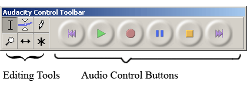

Except where otherwise noted, this material is licensed under a
Creative Commons Attribution-NonCommercial-ShareAlike 2.5 License.
There are four Toolbars: Control, Edit, Meter, and Mixer. These allow the user to record and manipulate audio. Each of the Toolbars contain a series of icons or buttons that perform a specific action when selected. Placing the cursor over one of the icons for approximately 2 seconds will display its name. This display popup is called a tooltip.
Each Toolbar contains a raised section known as a handle. Selecting this area with the mouse, left clicking and dragging will "tear it off" and allow it to float. This is convenient when working in other applications as the Toolbar can float on top allowing for easy recording.
The Control Toolbar is the first Toolbar the user is presented with and it contains two parts: Editing and Audio Control buttons (refer to Figure 4).
